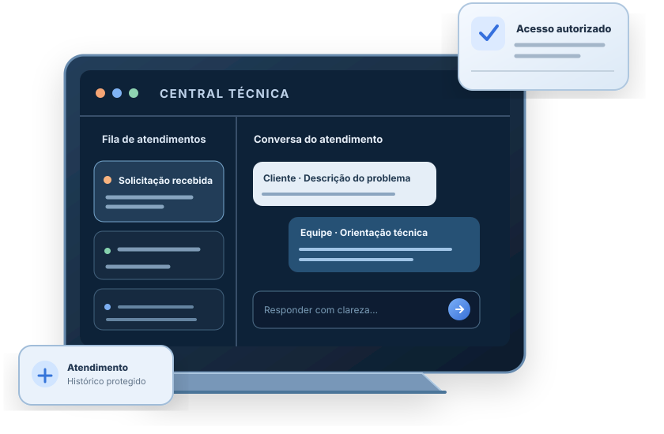

Comece pelas novidades
Use “Ver pendências” para localizar respostas e chamados não lidos. Abra um item para retomar o contexto.
ÁREA RESTRITA · PROXITI
Acesso à operação e ao acompanhamento dos atendimentos.

Acesso individual · Não compartilhe suas credenciais
CENTRAL TÉCNICA / ÁREA PRIVADA
Sua operação, seus atendimentos e recursos.
Nenhuma pendência por enquanto.
Sua conta ainda não foi autorizada pela administração.
PROXITI / SEU ESPAÇO DE TRABALHO
Verificando os dados da sua conta…
ORIENTAÇÃO RÁPIDA
Abra apenas o que for útil agora. Suas áreas disponíveis dependem das permissões da conta.
Use “Ver pendências” para localizar respostas e chamados não lidos. Abra um item para retomar o contexto.
Os cartões abaixo dão acesso às áreas autorizadas, como Academia, Ferramentas e seu perfil.
Amplie a leitura quando precisar. O modo de foco reduz o que aparece na tela, sem modificar seus chamados.
CONTINUE DE ONDE PAROU
Retome o contexto do atendimento que você estava acompanhando.
PRIORIDADES VISÍVEIS
Indicadores de até 100 chamados mais recentes acessíveis à sua conta. Atualização automática quando conectada.
ATENDIMENTOS
Seus chamados aparecerão aqui quando a fila estiver disponível.
SEUS RECURSOS
Fila, mensagens e histórico.
Abrir chamados →Retornos, visitas e horários combinados.
Ver compromissos →Materiais técnicos autorizados.
Ver materiais →Equipamentos e atribuições.
Ver ferramentas →Nome, foto e segurança.
Editar perfil →Os recursos aparecem conforme as permissões autorizadas pela administração.
PROXITI · CENTRAL DE OPERAÇÕES
Prioridades, responsáveis e histórico dos atendimentos.
Acompanhe cada etapa. Solicitações sem responsável ficam disponíveis aos técnicos autorizados.
Carregando chamados…
O histórico, as mensagens e as ações do chamado aparecerão aqui, sem sair da caixa de entrada.
FERRAMENTAS DE ATENDIMENTO
Registre o diagnóstico e preserve o contexto. Notas internas e arquivos não são enviados ao cliente.
Nenhum equipamento identificado.
Somente PDF, PNG, JPG ou WebP, até 5 MB por arquivo. Evite dados pessoais que não sejam necessários ao serviço.
Sem a confirmação, salva como rascunho. Nenhuma versão é enviada ao cliente automaticamente.
Convites e mudanças de permissões exigem verificação em duas etapas para administradores. Ative-a em Meu perfil antes de cadastrar a equipe.
Novos convidados começam com acesso pendente. A liberação e as permissões são definidas individualmente pelo administrador.
Edite os textos ligados ao site pelo identificador. A exclusão remove a personalização e restaura o texto estático do site. Arquivos-fonte, checkout e código continuam protegidos no GitHub.
Compromissos vinculados aos chamados acessíveis. Planejar não envia convite: confirme com o cliente antes de marcar o horário.
Carregando sua agenda…
Os materiais são internos, versionados e não substituem autorização do cliente nem julgamento técnico. Não há certificados automáticos.
CONTA E IDENTIDADE
Controle sua identificação no painel e proteja suas credenciais.
Consultando sua proteção adicional…
Use um aplicativo autenticador para proteger sua conta. Depois de ativar, o código será exigido no próximo login. Guarde um segundo fator de recuperação em outro dispositivo.
Se não puder ler o QR Code, digite esta chave no aplicativo: